1. Charles Babbage and Ada Lovelace
Human beings have made a number of tools to make math calculations more convenient and accurate. One of these tools, the abacus, was used by several ancient civilizations. It was introduced to Korea from China around the 1400s.

As late as the 1980s, abacuses were still common in Korean banks, and children attended classes to learn abacus calculation. As computers became widespread, abacuses largely disappeared from everyday use.

In 17th-century Europe, Pascal and Leibniz built gear-driven mechanical calculators.
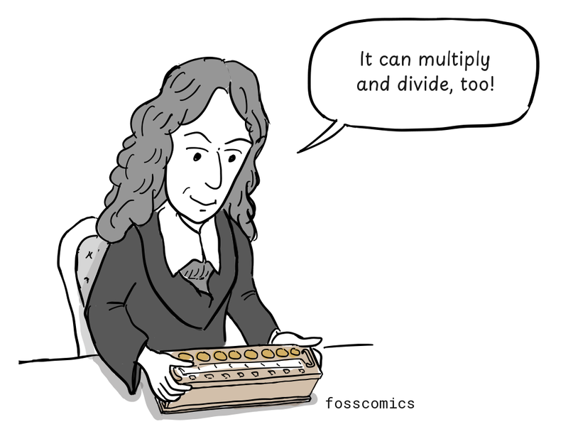
"Multiplication and division are possible!"
Charles Babbage and his difference engine
In 1822, British mathematician Charles Babbage (1791-1871) proposed the Difference Engine, a mechanical calculator designed to automatically produce accurate numerical tables, such as logarithmic and trigonometric tables. He later designed the Analytical Engine, a general-purpose mechanical machine with a memory or "store", an arithmetic unit or "mill", punched-card input, and a printer, anticipating several components of modern computers.
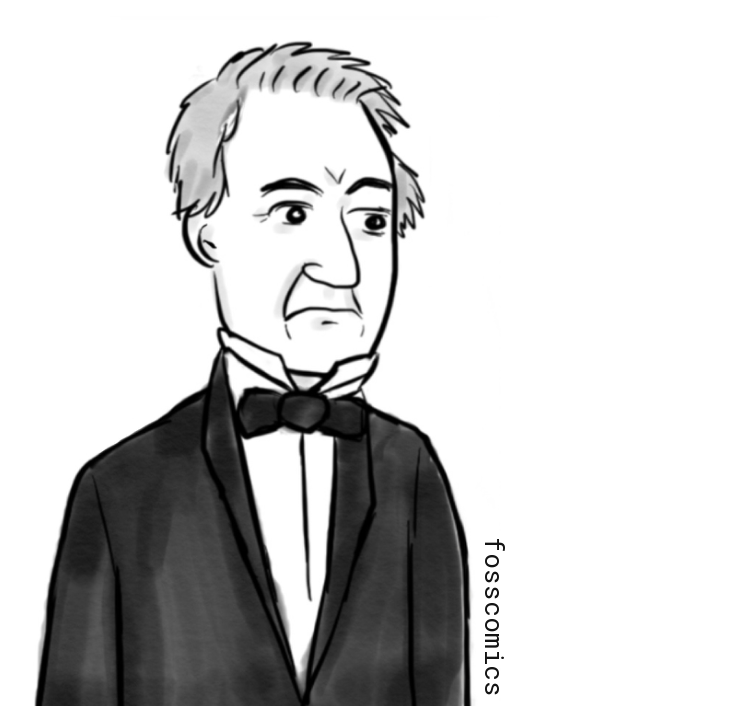
The Difference Engine used the method of finite differences to tabulate polynomial functions through repeated addition. Polynomials could approximate functions needed for logarithmic and trigonometric tables; this was a specialized calculator, not the programmable Analytical Engine described above. See the Computer History Museum's explanation of the engines.
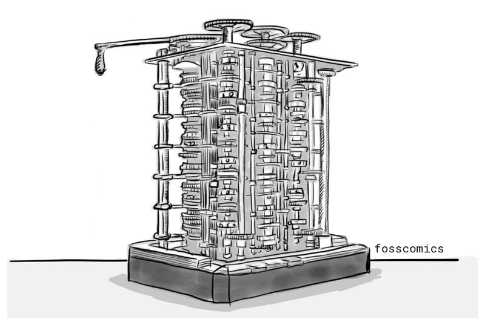
Ada's education and her meeting with Babbage
Ada Lovelace was born in 1815 to George Gordon Byron (better known as Lord Byron), a leading English Romantic poet, and Anne Isabella Milbanke. Her parents separated shortly after she was born, and she grew up with her mother.
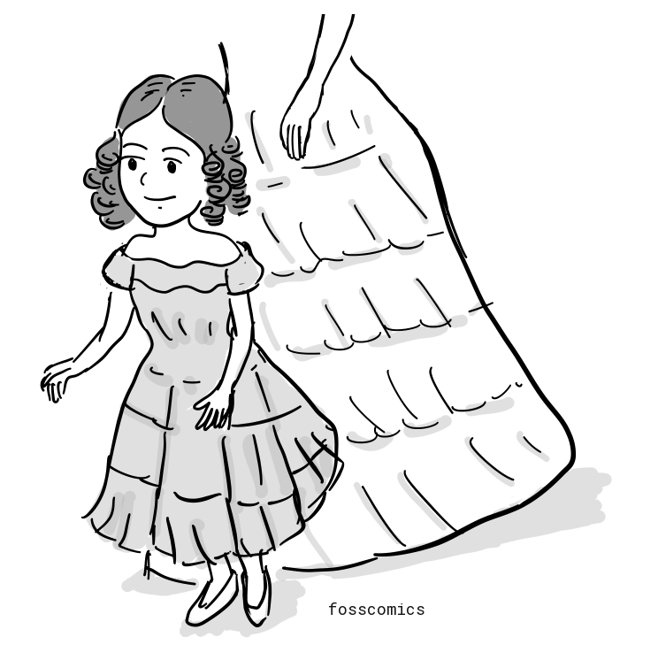
Since her mother was concerned that Ada might inherit Byron's temperament, her education emphasized mathematics and science rather than literature.
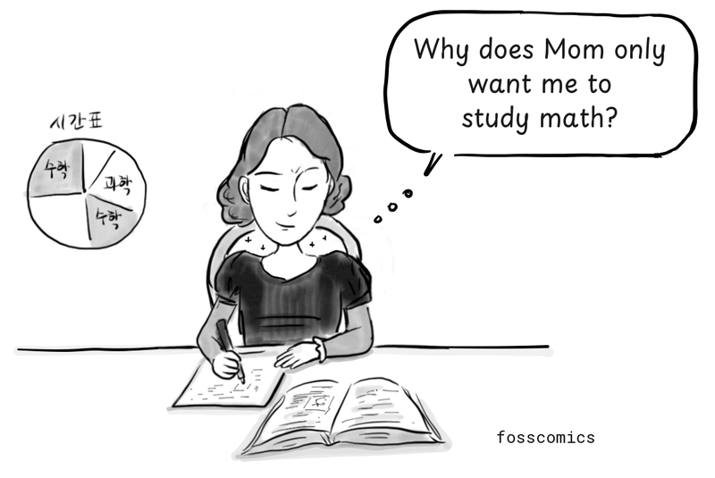
"Why does my mom only want me to learn mathematics?"
Ada studied with prominent mathematicians, including Augustus De Morgan, who recognized her talent.
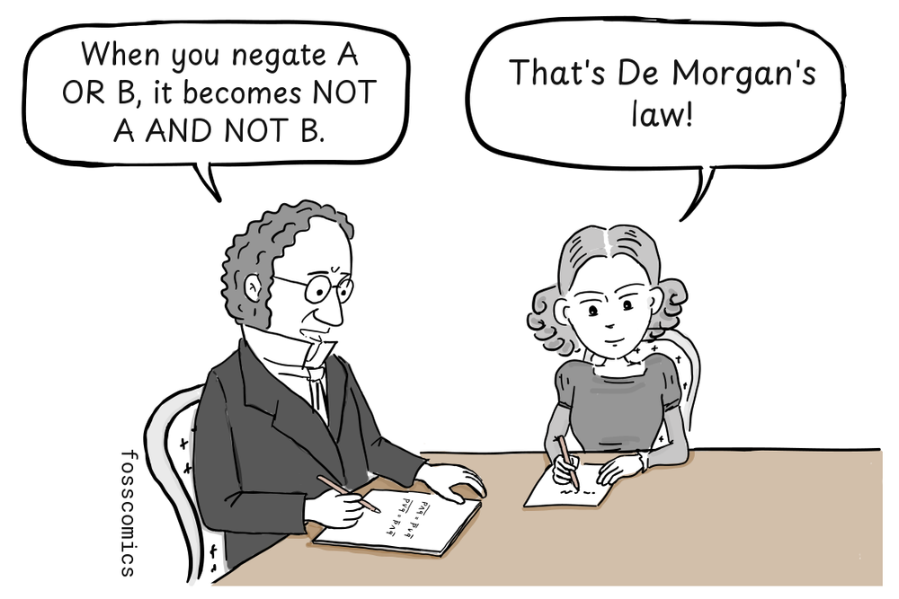
"When you negate A OR B, it becomes NOT A AND NOT B."
"That's De Morgan's law!"
At seventeen, Ada met Babbage and later saw him demonstrate the completed portion of his Difference Engine.
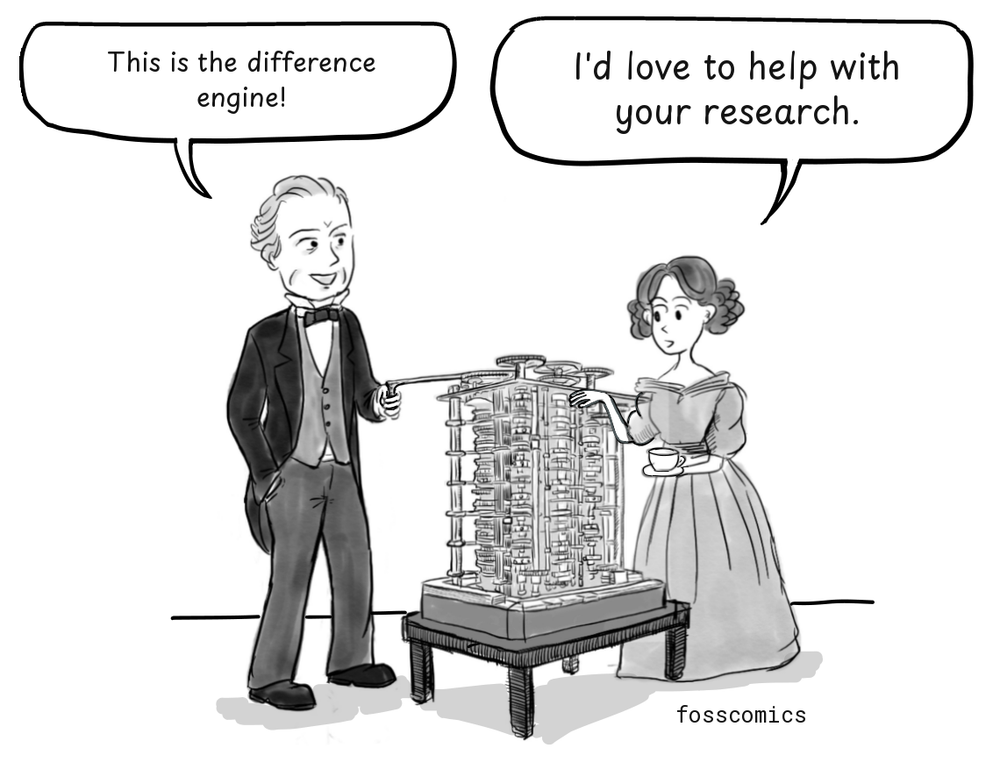
"This is the difference engine!"
"I'd love to help with your research."
The Analytical Engine: a machine that could read programs
The Analytical Engine, described in 1837, went beyond making tables: it was designed for general-purpose computation, like a modern computer. It would have a store, an arithmetic unit, and a printer, with punched cards supplying instructions and numerical data. Its step-by-step instructions can be compared to modern assembly language, and the machine was intended to be powered by a steam engine. The illustration imagines the scale of this proposed machine, rather than a completed engine.

Charles Babbage dreamed big, but the manufacturing technology and funding available at the time were not enough to automate complex calculations with intricate machinery.
The larger ambitions also raised questions about finishing and funding the earlier machine. The following conversation is a dramatization.
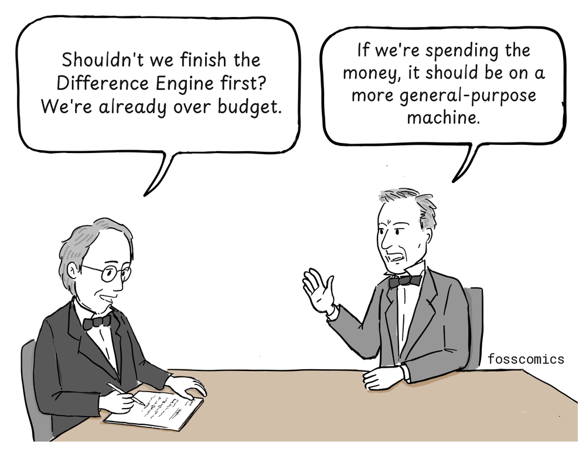
"Shouldn't we finish the Difference Engine first? We're already over budget."
"If we're spending the money, it should be on a more general-purpose machine."
Ada's notes and early programming
Ada became actively involved in work on the Analytical Engine. In 1843, Lovelace published an English translation of Luigi Menabrea's French article on the Analytical Engine, adding extensive notes of her own. The Computer History Museum describes this publication and her collaboration with Babbage.
To help explain the Analytical Engine, she presented an algorithm for calculating Bernoulli numbers in her published notes. It is often described as the first published computer program.
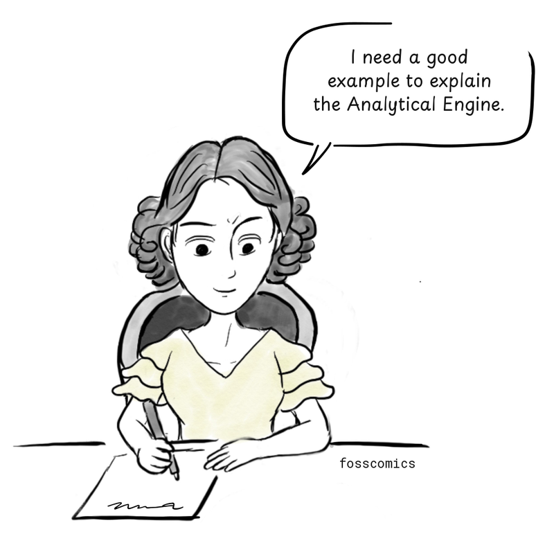
"I need a good example to explain the Analytical Engine."
Her notes described how the Analytical Engine could repeat a series of operations, an early account of looping. This work is why she is often called the first computer programmer. However, historians debate how much of the Bernoulli-number algorithm originated with Lovelace and how much resulted from her work with Babbage. Whatever the division of credit, Lovelace's notes remain one of the earliest published examples of programming.
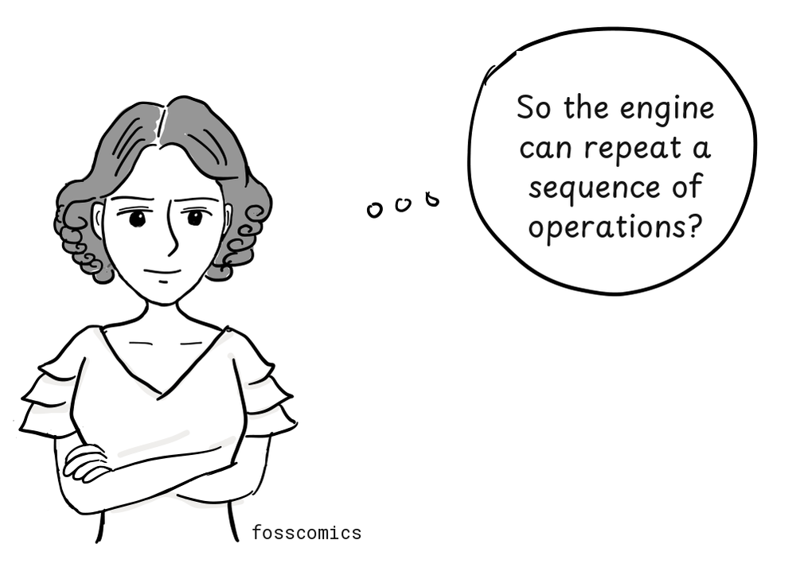
"So the engine can repeat a sequence of operations?"
In recognition of her pioneering contribution, the programming language Ada was later named after her.
with Ada.Text_IO;
procedure Hello is
begin
Ada.Text_IO.Put_Line ("Hello, world!");
end Hello;A "Hello, world!" program written in Ada.
Unfinished machines, lasting ideas
Babbage completed neither the Difference Engine nor the Analytical Engine during Lovelace's lifetime because of financial and technical difficulties. As a result, her program was never run on the proposed machine.
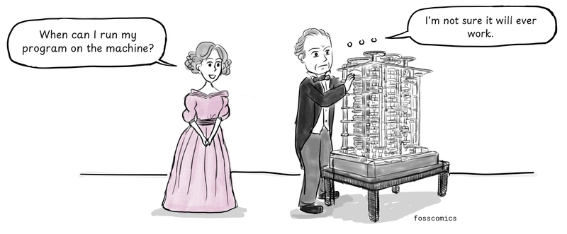
"When can I run my program on the machine?"
"I'm not sure it will ever work."
In 1991, the Science Museum in London completed the calculating section of a working Difference Engine No. 2 based on Babbage's designs. Its printing mechanism followed in 2002. The engine could calculate results to 31 digits. Lovelace's notes remain an important early account of how a general-purpose computing machine could be programmed.
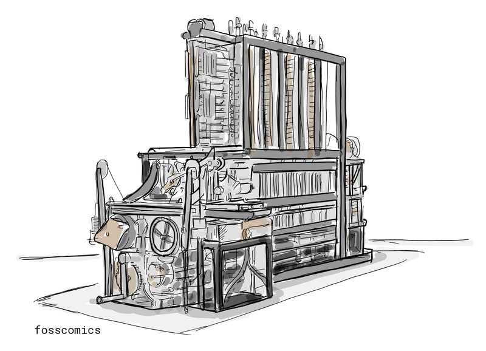